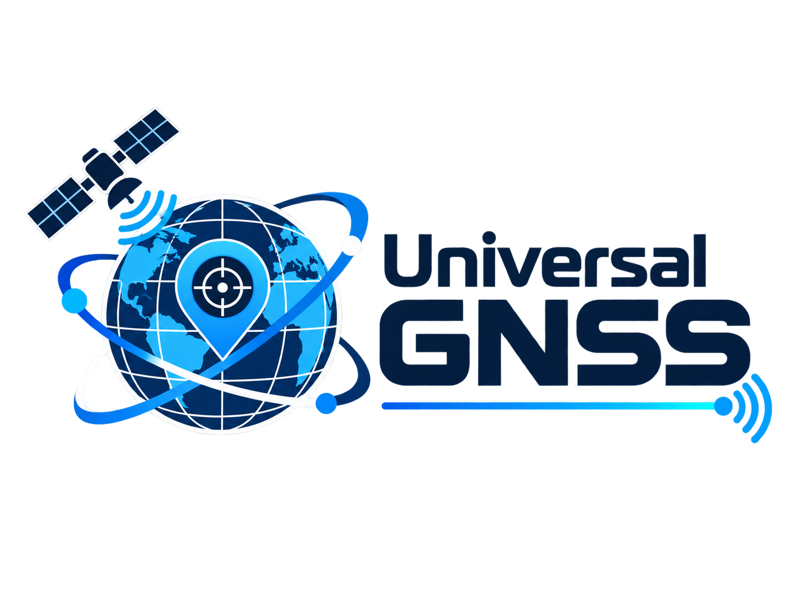

ESP32 Web Flasher
BASE ou relais S3 · Rover C3 · ESP-NOW en priorité

Profil du firmware
Ne pas flasher un autre modèle. C6 et LoRa ne sont pas proposés. Les GPIO Ethernet et GNSS doivent être vérifiés physiquement avant utilisation.
Configuration portable locale
Préparer les réglages après installation : ils ne sont ni intégrés à la ROM ni envoyés à GitHub. Aucun secret ni identifiant n’est accepté.
W5500 S3 : câblage soudé fixe. C3 : USB et UART sont disponibles dans la même ROM générique, USB par défaut. Pour le C3, préparer la connexion USB puis effectuer un reset manuel pour ouvrir la maintenance avant le RTCM. Le S3 utilise sa console USB indépendante du réseau. Aperçu et confirmation avant écriture ; aucun reset ni démarrage RTCM automatique. Transport logiciel testé, comportement physique USB à qualifier.
Flash USB
Construction logicielle vérifiée pour ce profil. Qualification matérielle non acquise.
La mise à jour conservant NVS n’est pas proposée sans preuve de compatibilité. Le navigateur ne compile pas ESP-IDF. Il ne flashe que des manifestes pointant vers des images déjà construites, vérifiées et publiées.